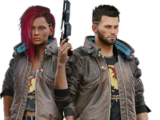

88 (engram, 2077)
Johnny Silverhand, born Robert John Linder, was a famous and influential
rockerboy
and lead singer of the band Samurai before its breakup in 2008. A military
veteran who
defined the rockerboy movement as it is known today, Silverhand was the most prominent
figure
who fought against the corrupted NUSA government and megacorporations, often being described
as
a terrorist because of this.
Traits:
- Charismatic
- Charmer
- Irrational
- Impulsive
- Manipulative

Jackie Welles was a merc from Heywood who, together with V, aimed to become a Night City legend. Jackie was known to value friendship, loyalty, and family above all else. He dreamed of living a life of luxury and providing for his own family, a dream that remained elusive for the impatient merc and that would ultimately never materialize.
In Cyberpunk 2077, Jackie is one of V's first contacts, quickly becoming V's partner and accompanying V on a handful of early jobs in the game.
As a teenager, he joined the Valentinos gang, but realizing how much he was capable of - he quit. For years he hustled through the unforgiving world of merckwork, because you need more than a go-getter attitude to sit at the big boys' table - you need street cred.

Panam Palmer is introduced as a former member of the Aldecaldos nomad clan, who, after a family dispute, decided to live a more independent life as a mercenary.Panam Palmer was part of the Aldecaldos nomad tribe. Her best friend was captured by the Raffen Shiv, a hostile Nomad group, when they were a child, only to be saved by fellow-Aldecaldo Cassidy Righter - an incident that deeply affected Panam into her adulthood, to the point of never telling anyone what happened in order to forget about it.
Cassidy would remain a close friend of Panam and become somewhat protective of her. Panam also befriended several other clan members, including Mitch Anderson and Driss "Scorpion" Meriana. Panam idolized Saul Bright, a fellow Aldecaldo who used to pull off impressive as well as funny stunts in his earlier years.

Judy Álvarez is a skilled braindance techie and a member of the Mox. She has her own apartment in northeastern Kabuki, Watson.
One of braindance's most gifted editors and a skilled techie. If she wanted to, she could get hired at any corpo entertainment studio and make bank, but Judy values her independence too much to sell out — she rejects every offer that comes her way.